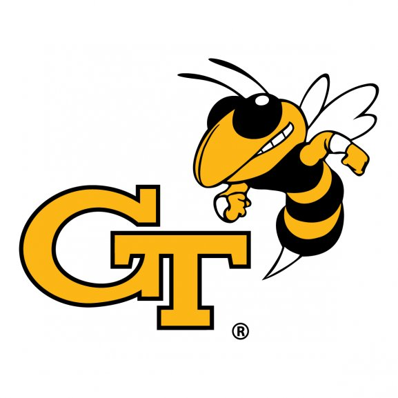

class: center, middle ## Georgia Tech BBUGS L.I.F.E Seminar ## 2019-12-09 ## [William Wan](https://william10000.com/) #### Press P for presentation notes ??? L.I.F.E (Learn about Industry from Experts?) I'm not really an expert so the E part is misleading --- ## Goal Is the a career in software engineering right for me? .right[] ??? You should feel free to leave the meeting when you can answer the question or when time's up. If you're just here for the free food, no hard feelings either. --- # Introduction 1. (4 years) 1.  - PhD - Rudy Gleason's Lab 1. - Post Doc - What is a mechanical engineering doing in a tissue culture room? 1. <img src="./images/athenahealth.png" alt="athenahealth" width="300"/> - Software Developer - 2015 - present ??? Here's my brief bio. - I did Teach for America at a school in the West End before the hipsters and breweries moved in and caused housing prices to go up. - For my postdoc, we wanted to go somewhere that had good hiking so we moved to Boulder where we people often go running up and down mountains before and after work. - During my postdoc my wife moved to Boston for PA school and we wanted to start a family so I looked for jobs in Boston and here we are, back in Atlanta. --- # What is software engineering? .small[ - Build software services that solve business problems. - Hospital CFO would like to use their accounting software to see revenue breakdown by department. - Practice manager would like to submit a Medicaid report so that they can get extra reimbursement for seeing indigent patients. - A biller would like to know how many deposits have not yet been reconciled. - An accounts payable clerk would like to know if the inventory staff has received items that they recently ordered. - A nurse in a operating room would like to easily take notes on infusion times and amounts. - A provider would like an easy way to search and enter medical codes on the patient they're seeing ] ??? We build software that helps solve these problems because these problems represent things that customers want and if we provide it in a good way, they might either buy or software or they won't switch to a competitor. --- # Typical day .small.red[ - 8:00am - daycare drop off].small[ - 9:00am - email - slack - easy code reviews - misc stuff - Daily stand up meeting (15-30 minutes) - review yesterday and today's goals - Work - Meetings / Research - Coding/Pairing/Mobbing - 1/2/3+ people looking and working on the same code - Lunch - Games - Walk / run - Yoga - Work - Meetings / Research - Coding/Pairing/Mobbing - 1/2/3+ people looking and working on the same code] .small.red[- 4:30pm - Daycare pickup - 1-2 hours in the evening - Resolve / respond to anything that came up since 4:30-ish - Finish the day ] ??? - Contrary what you might see in movies, most of my time is not actively coding but actually spending time to decide what to code. - Because we have flexible work schedules, everyone has a slightly different morning and evening routine, but the stuff between 10am and 4pm is pretty similar across software engineers at our company. - We work with other people quite a lot. --- # Non-typical day - Training on latest technology by an industry expert - Conference to learn and network - Visit to a client to talk to (or get yelled at by) users of your software - Phone call with hospital CFO on how to best serve their needs - Something broke and you need to get on the phone with another software vendor's software architect to help diagnose the issue - Something else broke and you found out because your manager was paged on her cell phone 😂 - Checking your email every 5 minutes to see if you get the Outlook invite to the meeting where HR tells you and your fellow layoff-ees the news. --- # Typical benefits .small[ - Salary similar to Senior/Staff/Research scientists at pharma companies (Sanofi/GSK/Vertex) - <https://www.levels.fyi/> for tech company salaries - Paid maternity/paternity leave - 6-12 weeks (Sanofi - 8 weeks, BCG - 12 weeks, CDC - 0, GTRI - 0) - Flexible (not unlimited) vacation - Impactful problems to solve - Nice health insurance - Fun coworkers - Board games - Nerf gun wars - Arcade cabinet - Video games - Flexible work schedule - No need to passage cells or take care of mice on weekends (also true of industry) ] ??? - These are not limited to tech companies and can probaly be generalized to large biotech companies as well. They are definitely better than typical post-doc benefits, though. - Salaries are similar to what you would get at a pharma company. I looked at a few companies on glassdoor so if people lied on glassdoor, then I could be wrong. - Family leave data is based on semi-random people that I know and don't reflect everyone that works at the companies - FMLA, the goverment law regulating family leave says that you can take 12 weeks of unpaid, job protected leave to take care of family including time to bond with a new baby. They don't have to pay you, they just can't fire you. Many companies offer paid maternity/paternity leave which is really, really nice since you get paid while you bond with your baby. --- # Other roles at tech companies - Data Science - tell stories with data - Data Engineering - move data so others can use it - Product Management - do businessy things and convince people to do things they didn't think they wanted to do. ??? That sounds good, but what if I don't want to do what you do but work with someone like you? These are my tl;dr descriptions and people who actually do these kinds of jobs may completely disagree with my tweet-size summaries of their hobs. --- # <img src="./images/athenahealth.png" alt="athenahealth" width="300"/> - Come work for us. - Specifically, come work for Collector - Help doctors get paid faster - Help practices run more efficiently - Help practices get government reimbursements they're entitled to <iframe width="420" height="236" src="https://www.youtube.com/embed/kLK8sO3FQNU" frameborder="0" allow="accelerometer; autoplay; encrypted-media; gyroscope; picture-in-picture" allowfullscreen></iframe> <iframe width="420" height="236" src="https://www.youtube.com/embed/sV_XqqofmLc" frameborder="0" allow="accelerometer; autoplay; encrypted-media; gyroscope; picture-in-picture" allowfullscreen></iframe> ??? - I did get permission to represent athenahealth so here's a slide or two. - I work on the Collector product which is the product that we make the most money from. We get a cut of claims that our clients bill through our EHR (electronic health record) system and Collector is the product that makes this happen. - <https://www.youtube.com/watch?v=rpW7oyth_Xg> --- # <img src="./images/athenahealth.png" alt="athenahealth" width="300"/> dev interview 1. Phone call 1. Phone screen - Hacker Rank 1. On-site * more coding challenges - get your code to mostly run * Resume review - be yourself and you'll pass unless you're a jerk. 1. Offer ??? - Other companies might give multiple phone screens or a take home challenge. --- # Next steps - Reflect - What problem are you trying to solve by completing your PhD and whatever you decide to do afterwards? - Contact me for questions, referral etc - william10000@gmail.com - <https://www.athenahealth.com/careers> --- # Questions .small[ Seed questions from Tim/Kyle: 1. "How your advanced degree led to your current career?" - Didn't want to post doc anymore so I applied to all the jobs. 1. "What does a bioengineering/BME PhD actually do in industry?" - See previous slides 1. "Leveraging the PhD during the career search" - Folks probably look at a PhD and know that you have the capability to work with people and see a project through from beginning to end (maybe). - One of my interviewers was a former CS professor who asked me "They still teach Matlab?" 1. "Other various professional development topics pertinent to your field." - Staying up to date is important - in any field. 1. ?? ] ??? - Questions and answers from the audience - What percent of time is spent "fighting fires"? - < 90% of the time so not that often. There are lots of checks in place to try to prevent bugs from reaching production. Code is peer reviewed and often thoroughly tested through automated processes. - What about interoperabilty between EHRs? - Some EHRs have different levels of interoperabilty between each other. athenahealth is quite good, but we also have to balance ease in transmitting information with adequately protecting patient privacy. There are some government standards, but interoperabilty is still a challenges - H1B? - We do sponser H1B visas for full time hires, not sure about interns. - What is it like being a remote worker? - There are different trade-offs and remote work works better for some folks than others. Some companies are also better set up for the success of remote employees than others. athena has video conferencing and instant messaging software that works pretty well and people are are used to the nuances of working on a remote team or having remote teammates. Being remote works for me because I get to do daycare pick ups and drop offs and benefit from fewer interruptions and have a quiet place to work. I often have lunch with friends that also work remotely in the area or work in the area. Remote employees can end up working more hours because they do a third shift in the evening or mornings. - Learning about agile and software development, software development life cycle (SDLC)? - Agile is a way of working that is often applied to software development <https://zenkit.com/en/blog/agile-methodology-an-overview/> but can be used in other contexts as well. - In terms of getting a head start, it's probably a better use of time to lean some of the techniques used, such as version control (Git) and work on moderately complex software projects with other people. I go to the Code For Atlanta meetup where there's a mix of beginners and professional software developers/UX/product managers that work on teams for projects that benefit the public. - Do we use Matlab in industry? - Not at athena. Data science tech stack consists of Python/R that's sometimes deployed to AWS. The web app techstack is a mix of Perl/Java/NodeJS on the server with Oracle/Postgres as databases and JavaScript/React for frontend code - Government regulation? - EHRs are regulated by the government as well as medical practices. Our software has to meet government regulations, and we also have to help our clients meet their goverment reporting and operational requirements. There are lots of regulations regarding the kind of data a practice as to collect and report on and our software helps them do that. As regulations change, we have to update our software well ahead of time so that our clients can meet their requirements before government deadlines.